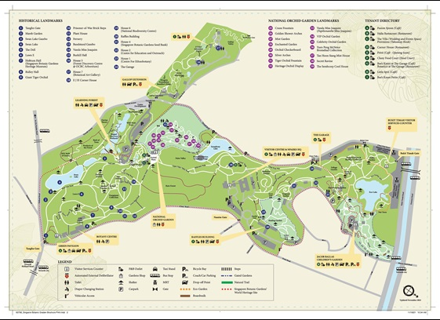
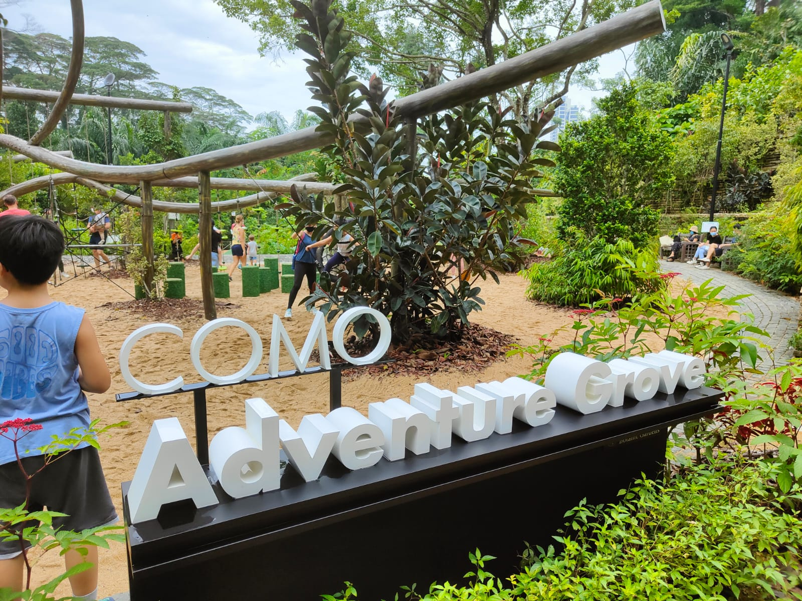

✨ Outdoor places in Singapore ✨
The idea of a national garden in Singapore started in 1822 when Sir Stamford Raffles, the founder of modern Singapore and a keen naturalist, developed the first ‘Botanical and Experimental Garden’ at Fort Canning. It was only in 1859 that the Gardens at its present site was founded and laid out in the English Landscape Movement’s style by an Agri-Horticultural society. The Gardens was soon handed over to the British colonial government (in 1874) and a series of Kew-trained botanists saw the Gardens blossom into an important botanical institute over the following decades. Today, the Gardens is managed by the National Parks Board, a statutory board of the Singapore government.

Ticketing information: 6475 5060
Jacob Ballas Children's Garden is the first garden in Asia dedicated to children. "life on Earth Depends on Plants" is the theme where it aims to educate and instill a love for nature in children. The garden offers children a space for exploration, adventure and play, with a farm, an orchard, and a forest with its own stream and ponds.
Opening hour: 8.00am - 7.00pm (last admission at 6.30pm)
The Jacob Ballas Children's Garden is closed on Mondays
(except when it falls on a designated public holiday)
Inspired by the distinctive parts of trees found within the Gardens, this is a modern interpretation of the timeless experience of climbing and playing in trees. Children can swing, slide and climb on structures resembling the aerial roots of the Weeping Fig (Ficus benjamina), scramble over the warty surface of a giant Cempedak (Artocarpus integer) or roll and hop around the pod and seeds of a Saga tree (Adenanthera pavonina). These adaptive components will help introduce children to nature through play. The COMO Adventure Grove is set within nature, so children can connect with nature through play and exploration. It will enable children to choose how and what to play with, thus developing a sense of adventure and discovery, and increasing their independence.
Open daily 7am - 7pm
No dogs allowed

More information:How to get there Singapore Botanic Gardens 📞 1800 471 7300 ✉ Email:Singapore Botanic Gardens |
|
|---|